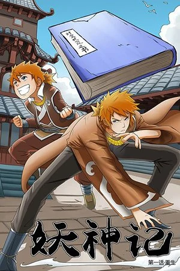

Home
Release Terbaru
Manga Populer
Direktori Manga
Chapter
01
Solo Leveling
Ten years ago, "the Gate" appeared and connected the real world with the realm of magic and monsters. To combat these vile beasts, ordinary people...
View Details
Chapter
01

Tales of Demons and Gods
Killed by a Sage Emperor and reborn as his 13-year-old self, Nie Li was given a second chance at life. A second chance...
View Details
Chapter
01
Weak Hero
The school is run by tyrants whose favorite hobby is tormenting the weakest kids in class. But then Gray arrived. This mysterious new student...
View Details
Chapter
01
God Slayer
God Slayer is a web comic serialized by Tiger Studio. The cartoon reveals that although he lost his right hand and right leg in a car accident, Beiming...
View Details